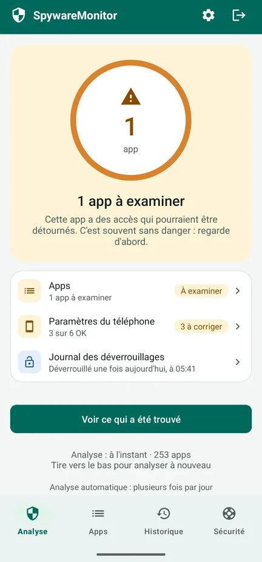
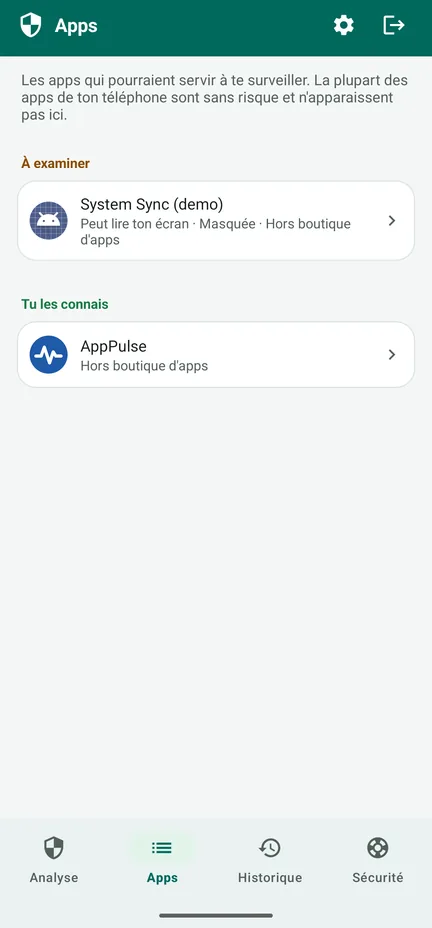
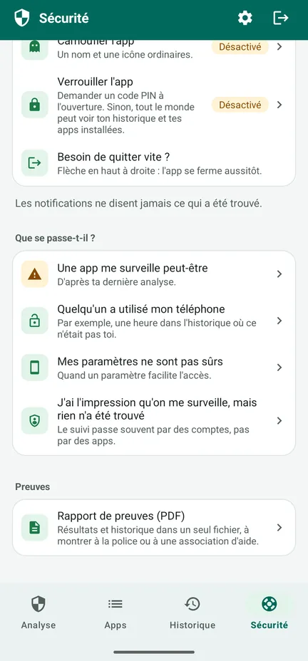
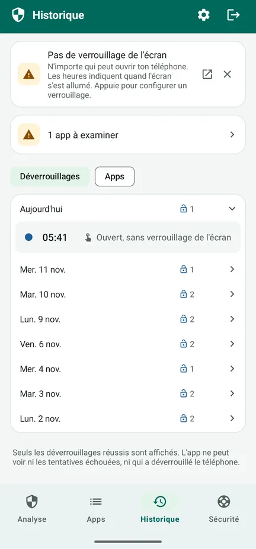

Quelqu'un surveille ton téléphone ?
SpywareMonitor vérifie quelles apps de ton téléphone Android pourraient servir à t'espionner – et t'explique pourquoi, avec des mots simples.
Pour toute personne qui craint qu'un partenaire, un ex ou quelqu'un d'autre la suive en secret à travers son téléphone. Sans internet, sans pub, sans compte : rien ne quitte ton téléphone.
Disponible sur Google Play Comment ça marche, étape par étape (en anglais)
Gratuit sur Google Play pour Android 8 et versions ultérieures, avec une mise à niveau Pro facultative, en un seul paiement. En 10 langues, dont le français.

Logiciels espions connus
132 apps de surveillance (stalkerware), reconnues par leur nom et leur certificat de signature.
Apps masquées
Apps sans icône, ou dont le nom se fait passer pour une partie d'Android.
Apps qui peuvent te surveiller
Apps qui lisent ton écran ou tes notifications, ou qui agissent comme administrateur de l'appareil.
Paramètres du téléphone
Pas de verrouillage de l'écran, débogage USB ou autres réglages qui facilitent l'accès à ton téléphone.
Des étapes sûres
Quoi faire, dans un ordre sûr, pour ne pas alerter l'autre personne.
Rien ne quitte ton téléphone
Pas d'accès à internet : pas de pub, pas de pistage, pas de compte.
L'app en images
Regarde la présentation de 83 secondes (en anglais) – comment l'app analyse ton téléphone, ce que veulent dire l'orange et le rouge, et quoi faire ensuite – ou découvre les écrans. Voir sur YouTube



Gratuit : l'analyse
- Vérifie chaque app, et la compare à la liste des logiciels espions connus
- Orange : des accès qui pourraient être détournés – souvent sans danger, alors regarde d'abord. Rouge : un logiciel espion connu.
- Les raisons pour chaque app, et qui l'a créée
- Les paramètres du téléphone, chacun avec un bouton pour le corriger
- L'onglet Sécurité : des étapes adaptées à ta situation, dans un ordre sûr
- Sortie rapide : la flèche en haut à droite ferme l'app aussitôt
Pro : un seul paiement, pas d'abonnement
- Analyser automatiquement plusieurs fois par jour, avec un seul bouton. Une notification ne dit jamais ce qui a été trouvé – seulement le nom de l'app et « Appuie pour ouvrir » – et tu peux la retarder d'une heure.
- Journal des déverrouillages : quand ton téléphone a été déverrouillé, pour remarquer si quelqu'un d'autre l'a utilisé
- Historique : quelle app a été installée, a reçu un accès ou a été supprimée, et quand
- Rapport de preuves (PDF) dans la langue de l'app, à montrer à la police ou à une association d'aide
- Camouflage et verrouillage : affiche l'app comme Notes, Météo, Recettes ou Agenda, avec un code PIN ou ton empreinte digitale
Ton historique est déjà noté dans la version gratuite. L'e-mail de reçu d'achat de Google et l'historique des commandes Play mentionnent le nom de l'app.
Réglages conseillés : protège l'app en 5 étapes (en anglais)
Avant de supprimer quoi que ce soit
- Supprimer un logiciel espion peut alerter la personne qui l'a installé. Pense d'abord à ta sécurité.
- Garde des preuves : le rapport de preuves, des captures d'écran, ou des photos prises avec un autre téléphone.
- Parles-en à quelqu'un de confiance, à la police ou à une ligne d'écoute, de préférence depuis un téléphone qui n'est pas surveillé. La plupart des pays ont une ligne d'écoute gratuite pour les violences conjugales ou les abus.
- Change tes mots de passe importants depuis un autre appareil.
- En cas de danger immédiat, appelle le numéro d'urgence de ton pays.
L'onglet Sécurité de l'app te guide pas à pas selon ta situation. Lis quoi faire quand quelque chose est trouvé (en anglais), et protège d'abord l'app elle-même (en anglais) : camoufle-la et verrouille-la avec un code PIN.
Les détails
Tout ce qu'il vérifie
- 132 logiciels espions connus (nom et certificat de signature)
- Les apps sans icône dans la liste des apps
- L'accessibilité, l'accès aux notifications et l'administration de l'appareil
- Les apps installées depuis un fichier ou une autre source plutôt que depuis une boutique d'apps
- Les combinaisons à risque, par exemple la position en arrière-plan avec le micro et les SMS
- Le verrouillage de l'écran, le débogage USB, les options pour les développeurs, les apps autorisées à installer d'autres apps, un téléphone géré par quelqu'un d'autre
- Les signes de root, affichés seulement s'ils sont trouvés
Une confidentialité vérifiable
SpywareMonitor n'a pas l'autorisation d'accéder à internet : il ne peut rien envoyer nulle part. Ses données sont exclues de la sauvegarde dans le cloud. La liste des logiciels espions connus est intégrée à l'app et mise à jour avec elle. Politique de confidentialité (en anglais).
Honnête sur ses limites
Aucune analyse ne peut garantir qu'un téléphone est sain à 100 %. Les apps d'un profil professionnel, et un logiciel espion sur un téléphone rooté de façon bien cachée, ne sont visibles par aucune app ordinaire. SpywareMonitor te prévient s'il trouve des signes de root. Le suivi peut aussi passer par des comptes, sans aucune app.
Langues et téléphones
10 langues : français, anglais, norvégien, néerlandais, allemand, espagnol, polonais, chinois, hindi et arabe. Android 8 et versions ultérieures.
Questions fréquentes
Comment savoir s'il y a un logiciel espion sur mon téléphone Android ?
Repère les apps que tu ne connais pas et qui sont masquées dans la liste des apps, qui peuvent lire ton écran (accessibilité) ou tes notifications, qui sont administrateurs de l'appareil, ou qui ont été installées depuis un fichier plutôt que depuis le Play Store. SpywareMonitor vérifie tout cela et compare tes apps à une liste de 132 logiciels espions connus.
SpywareMonitor envoie-t-il mes données quelque part ?
Non. L'app n'a pas l'autorisation d'accéder à internet : rien ne peut quitter ton téléphone. Pas de compte, pas de pub, pas de statistiques.
Faut-il supprimer tout de suite un logiciel espion ?
Le supprimer peut alerter la personne qui l'a installé. Pense d'abord à ta sécurité, garde des preuves, et parles-en à quelqu'un de confiance, à la police ou à une ligne d'écoute, de préférence depuis un téléphone qui n'est pas surveillé.
SpywareMonitor trouve-t-il tous les logiciels espions ?
Aucune analyse ne peut le promettre. Les apps d'un profil professionnel et un logiciel espion sur un téléphone rooté ne sont visibles par aucune app ordinaire. SpywareMonitor le dit honnêtement et montre ce qu'il peut vérifier.
SpywareMonitor est-il gratuit ?
L'analyse, les paramètres du téléphone et les étapes de sécurité sont gratuits. Pro, c'est un seul paiement, sans abonnement : il ajoute les analyses automatiques avec des notifications discrètes, l'Historique, le journal des déverrouillages, un rapport de preuves en PDF, ainsi que le camouflage et le code PIN de l'app.
Puis-je cacher SpywareMonitor sur mon téléphone ?
Avec Pro, tu peux camoufler l'app en Notes, Météo, Recettes ou Agenda et la verrouiller avec un code PIN. Ses notifications ne disent jamais ce qui a été trouvé. La flèche en haut à droite ferme l'app aussitôt. Attention : l'e-mail de reçu d'achat de Google et l'historique des commandes Play mentionnent bien le nom de l'app.
J'ai l'impression qu'on me surveille, mais rien n'a été trouvé. Que faire ?
Le suivi passe souvent par des comptes, pas par des apps. Arrête le partage de position dans Google Maps, vérifie les appareils connectés à ton compte Google ainsi que ton adresse e-mail et ton numéro de récupération, et cherche un traceur caché. Fais les changements sur ton compte depuis un autre appareil. Plus de détails dans l'aide (en anglais).
Guides : les logiciels espions sur Android
Aide pas à pas
Autres apps de Nordic Appworks
UpdateMonitor — l'historique de chaque mise à jour, installation et suppression d'app sur ton téléphone, avec les changements d'autorisations. RebootMonitor — quand ton téléphone a redémarré pour la dernière fois. Comme SpywareMonitor : sans internet et sans pub.
Contact
Questions ou remarques : support@spywaremonitor.app
La liste des logiciels espions connus provient des indicateurs de stalkerware d'Echap, sous licence CC BY 4.0.